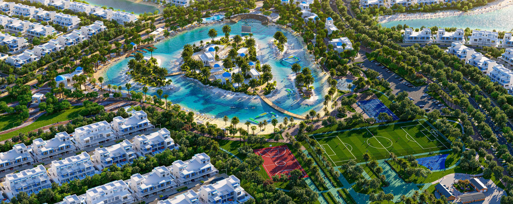
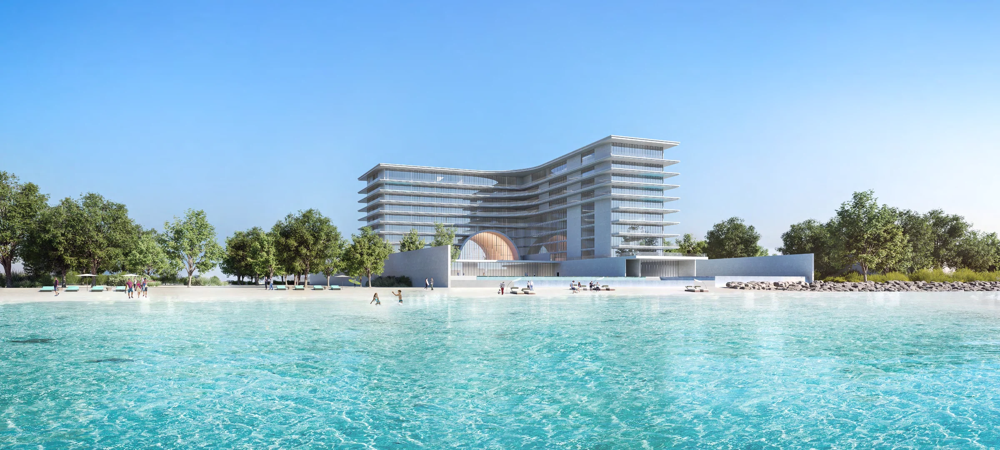
EXCEED GLOBAL LIVING
日本人・日本企業向けの
ドバイ不動産なら
EXCEED
物件選びから運用・売却までサポート。
その先の暮らしを、銀座から。
ARMANI BEACH RESIDENCE · PALM JUMEIRAHGINZA SHOWROOM 2026.11.19 OPEN
お客様と築いてきた確かな実績
- 販売実績
- 400
- 累計取引数
- 100
- 法人設立件数
- 50
- ビザ発行件数
- 50
セミナー参加者 500人以上
ドバイ不動産 販売実績 No.1
投資リターン 200%以上
A PLACE TO BEGIN
世界の選択肢に、
銀座で出会う。
海外不動産を起点に、
世界との接点を銀座へ。
ドバイで培ってきた知見と、人とのつながり。EXCEED Global Livingは、不動産と暮らしの相談を通じて、お客様がご自身に合う一歩を選ぶお手伝いをしています。
その経験を、日本でも身近に。東京・銀座五丁目に、新たなショールームを開設します。
銀座ショールームについて
THE GINZA EXPERIENCE
見て、比べて、話す。
まだ、購入を決めていなくても。
模型や映像を見て、気になる住まいを比べて、現地を知るスタッフと日本語で話す。まずは、知ることから始められる場所です。
来場について相談する
TOKYO, GINZA 5-CHOME
見て、知る。
街・建築・暮らしを具体的に。
比べて、考える。
目的に合う選択肢を一緒に。
日本語で、話す。
現地の経験から、不安を整理。
FOUR DISTINCT PERSPECTIVES
建築から、
暮らしの可能性へ。
オフィス内の専属4ブランドを、
同じ場所で見て、比べる。
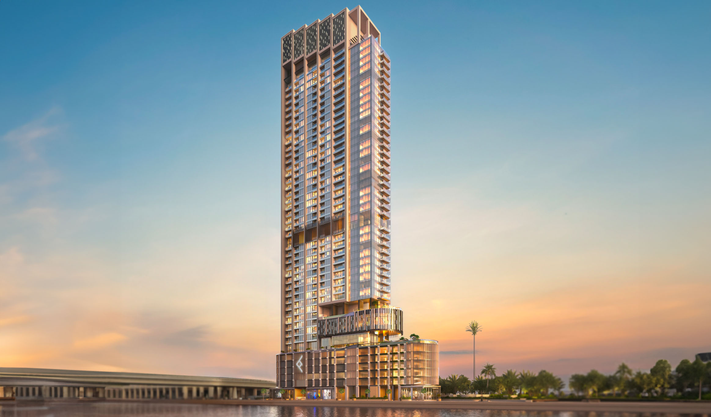
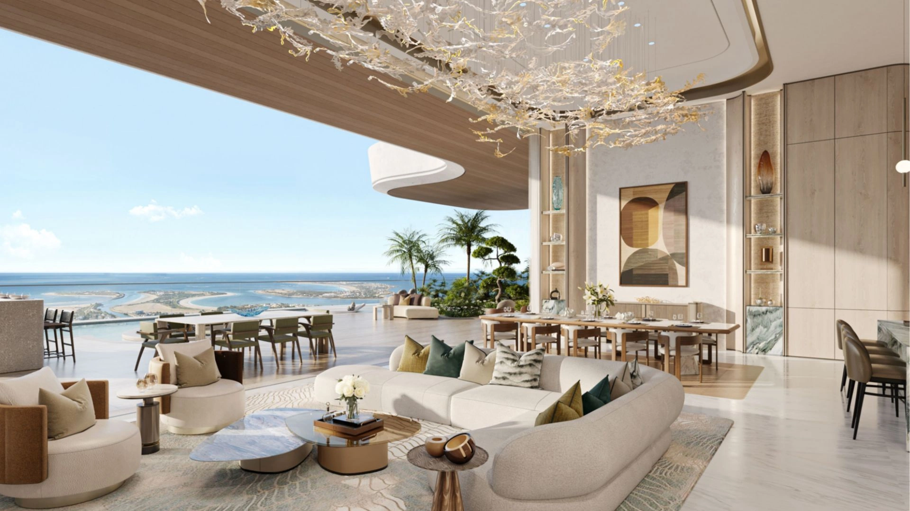
AMALI / INTERIORS
Private island living
海と、静けさと、自分だけの時間。
開放的な住空間から、プライベートなアイランドライフを思い描く。
このデベロッパーについて相談する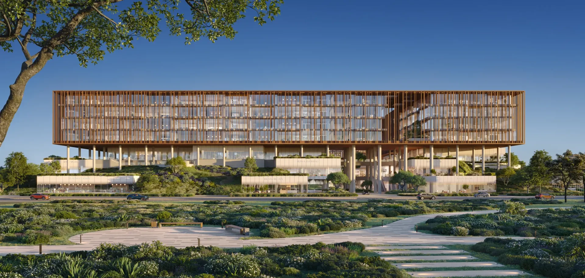
AN EXPANDING NETWORK
4社を深く知る。さらに広い選択肢へ。
参加デベロッパーを今後も広げていきます。ほかのデベロッパーについても、EXCEEDスタッフが物件の比較や担当者へのご相談をお手伝いします。FIND YOUR PLACE
どんな未来を、
思い描きますか。
Residence住まい
Commercial事業用
まずはドバイ不動産を知るところから
BEFORE YOUR INVESTMENT
このようなお悩みはございませんか？
どの物件を選べばよいかわからない
エリアや物件の情報は見つかるけれど、自分の予算や投資目的に合っているのか判断できない。
費用やリスクまで把握してから検討したい
物件価格以外に、どれくらいの費用が必要なのか。維持費や為替の影響も含めて資金計画を考えたい。
海外での契約や手続きを進められるか不安
言語や商習慣が違うなかで、契約内容を理解し、必要な手続きを進められるか心配。
購入後の管理や売却まで相談できる相手がほしい
日本にいながら賃貸管理や現地のトラブルに対応できるのか。将来売却するときのことも確認しておきたい。
OUR STRENGTH
ドバイ不動産No.1の EXCEEDの強み
大切な資産の選択に現地の知見と一貫した支援を。EXCEEDが物件の検討からサポートします。
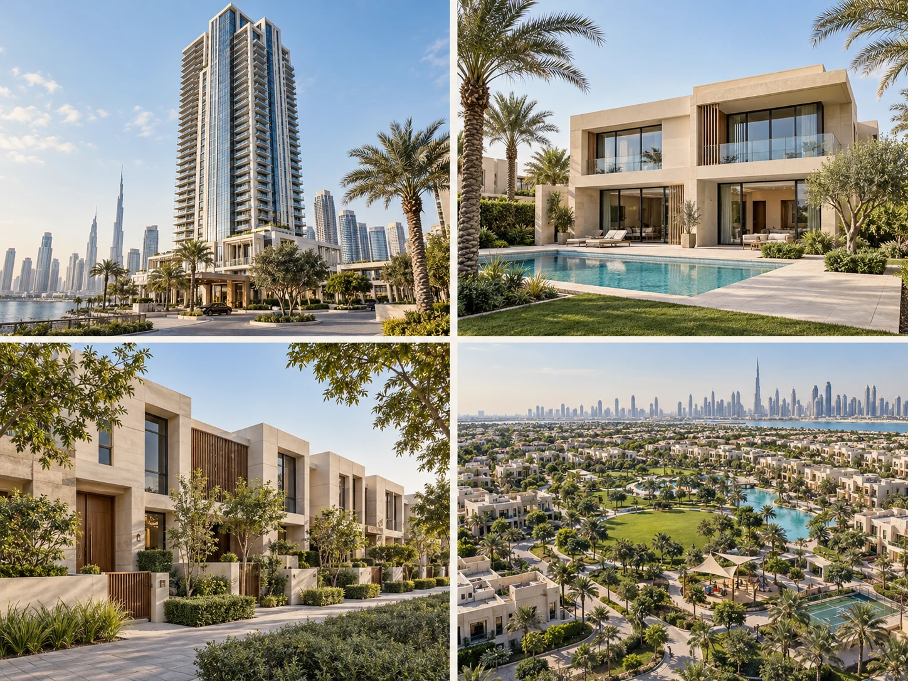
01現地の知見を活かした物件選定
数ある物件から、選ぶ理由のある一件を。
ドバイの有力デベロッパーと連携し、日々の市場調査・現地視察などにより優良物件を把握しております。
02
判断を支える専門家との連携
専門家との連携によりあらゆる不安を解消します。
弁護士・税理士などの専門家と連携し、法律・税務に関するご相談を支援。法人設立や銀行口座の開設、移住ビザの取得までサポートします。
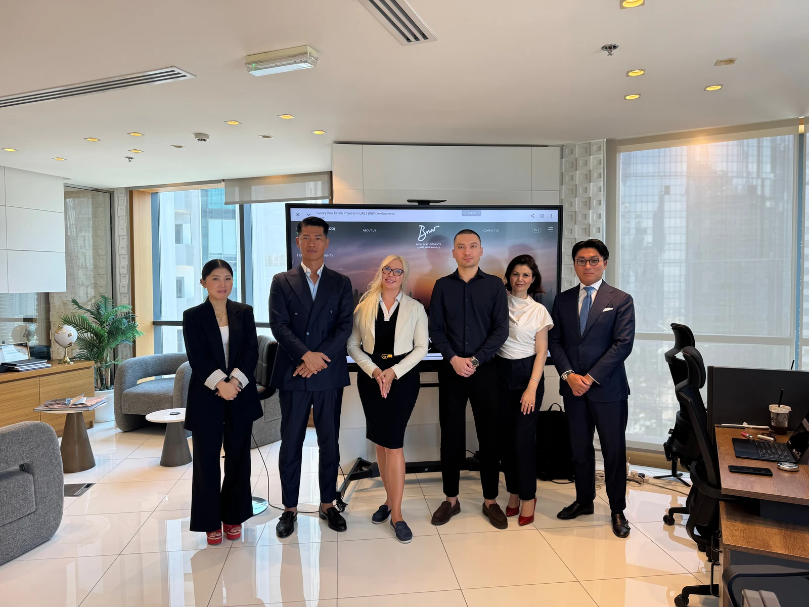
03購入後も続くサポート
購入から売却まで。保有と売却を支えるパートナー。
契約・引き渡しに加え、購入後の管理・賃貸、将来の売却まで支援。保有中のご相談にも対応し、購入後も継続してサポートします。日本からドバイへ投資をする方でも安心して始められます。
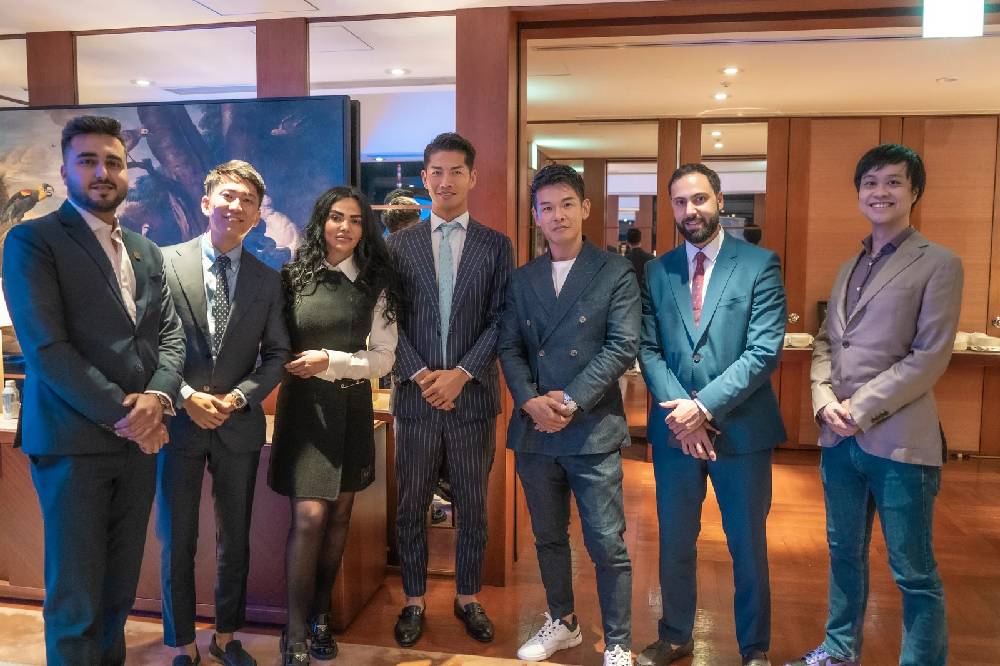
04日本語で相談できる現地体制
日本人エージェントがあらゆるニーズに対応。
ドバイ在住の日本人エージェントが、現地スタッフと連携。物件の検討から購入手続きまで、日本語でご相談いただける体制を整えています。
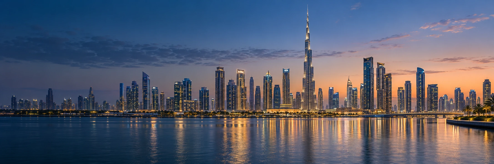
WHY DUBAI
ドバイを選ぶ4つの理由
資産を持つ場所として 暮らしを描く場所として
URBAN DEVELOPMENT
開発が続く、成長都市。
長期的な都市計画のもと、交通網や新たな住宅地の整備が進行。インフラ、新しいコミュニティ、大規模開発が都市の成長を続けています。
GLOBAL ACCESS
世界を繋ぐ、国際拠点。
欧州・アジア・アフリカを結ぶ立地と航空網。海外との往来や、事業の拠点としての利便性も魅力です。
PROPERTY OWNERSHIP
外国人も所有できる制度。
指定のフリーホールドエリアでは、外国人も不動産を所有できます。アパートからヴィラまで、多様な選択肢があります。
INFRASTRUCTURE
暮らしを支える都市機能
交通、医療、教育、ホテル、ビーチ、商業、レジャーが都市としての魅力を支えています。
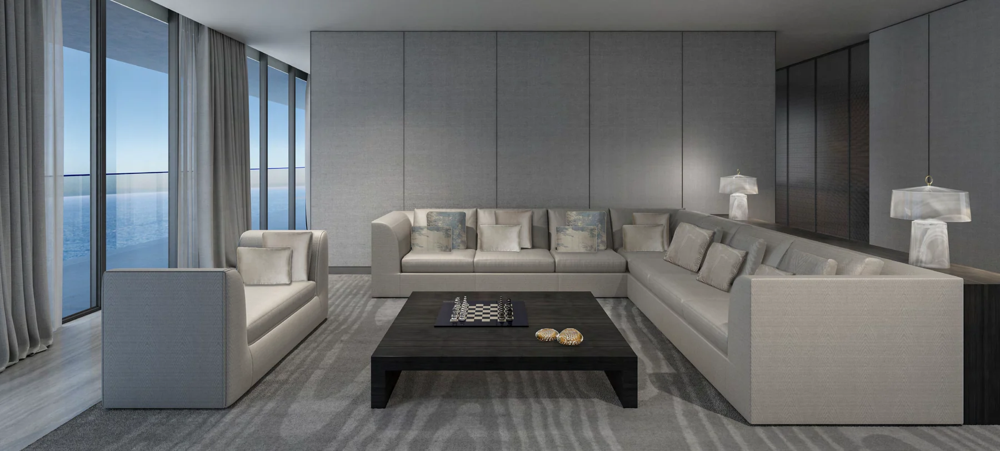
YOUR FIRST CONVERSATION
まずは、知ることから。
ドバイ不動産を、
自分の言葉で理解する時間。
説明を聞いて理解を深めたい方へ。
無料セミナー申し込みお申し込みは1分で完了まずは資料で検討したい方へ
無料資料請求SELECTED PROPERTIES
ドバイの厳選物件
ロケーションと建築から ご自身に合う物件を
01 / 08
CLIENT STORIES
お客様の声
お客様がEXCEEDを選んだ理由
VOICE 01
物件選定から契約まで
全てワンストップで任せられる！

ドバイには以前から興味を持っていましたが、情報が少なく困っていました。ドバイ不動産専門と聞き、まずはEXCEEDさんのセミナーへ参加。セミナー後、代表の嶋田社長とも面談。EXCEEDさんの「ドバイの不動産に特化」「日本人スタッフでサポート」「物件選定から契約までワンストップで支援」に惹かれ、ドバイへの投資を決めました。
購入物件
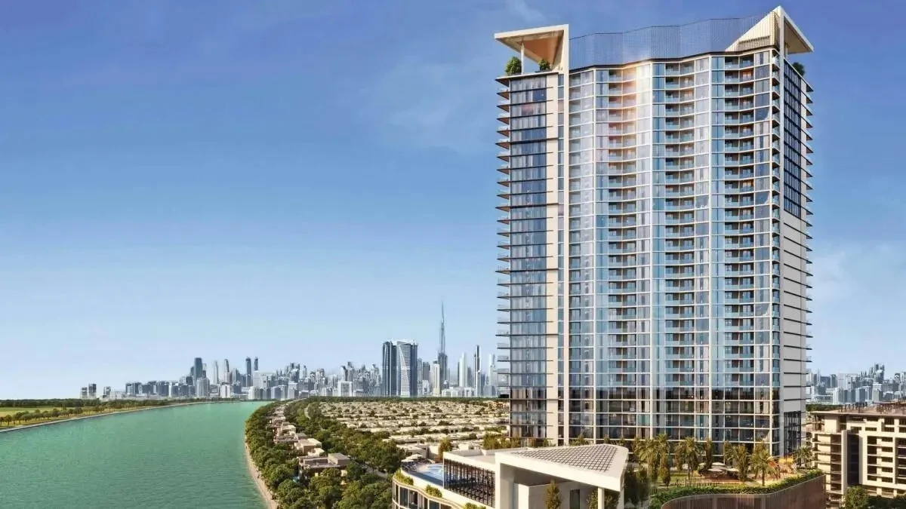
ウェーブグランデ
｜アパートメント｜
- エリア
- ソバ ハートランド
- 間取り
- 1LDK(66平米)
- 購入金額
- 49,200,000円
- 購入時期
- 2022年1月
- 支払金額
- 30,750,000円(購入金額の62.5%)
- 売却時期
- 2024年1月
- 売却金額
- 62,000,000円(26.01%UP)
- 利益
- 1200万以上
(ROE 41.62%)
VOICE 02
ドバイ不動産セミナーに参加し、
不安がなくなりました

海外の不動産投資は、興味を持っていましたが、何から始めるべきかわかりませんでした。知人の紹介で、EXCEEDさんのドバイ不動産への投資セミナーに参加。説明が分かりやすく、またドバイの将来性をとても感じ、投資することにしました。投資後、資産価値が順調に値上がりし、安心しています。
購入物件

ダマックラグーンサントリーニ
｜タウンハウス｜
- エリア
- ダマックラグーン
- 間取り
- 4LDK(203平米)
- 購入金額
- 102,400,000円
- 購入時期
- 2022年1月
- 支払金額
- 40,960,000円(購入金額の40%)
- 売却時期
- 2023年11月
- 売却金額
- 127,450,000円(価格24.46%UP)
- 利益
- 2500万円以上
(ROE 61.1%)
FROM JAPAN. THROUGH THE UAE.
日本からUAEへ。
その先の、世界へ。
不動産を通じて生まれたご縁は、暮らしや仕事、次の国とのつながりへ。UAEを世界を知る接点として、一人ひとりに合う選択肢を考えます。
291ドバイ国際空港の就航先
110就航する国々
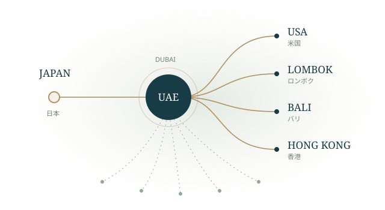
WHAT WE DO. WHERE WE GO.
今ある事業から、
次の可能性へ。
まず、暮らしの選択肢を広げる。
その経験を、次の世代へ。
EXCEED Global Livingを起点に、学び・企業の挑戦・社会への還元へ。私たちが目指す未来を、段階的に育てていきます。
現在の事業
EXCEED Global Living
海外不動産・暮らしの相談。
物件選びから運用・売却まで、日本語で支える。
今後の展望現在の事業で得た経験から広がる、三つの構想。
GLOBAL BUSINESS / 今後の展望
出会いが、
次の一歩になる。
成功だけでなく、迷いや失敗も。
世界で挑む人の、本当の話を。
海外進出の情報や人脈に、どう出会うか。日本とUAE、そして世界の起業家・実務家をつなぐ対談や国際交流の場を構想しています。
企業の挑戦、現地の商習慣、仕事や暮らしの実体験。将来的にはYouTubeなどでの発信も通じて、銀座に来られない方にも学びを届けたいと考えています。
国際交流 · 起業家との対談 · 経験の共有GLOBAL EDUCATION / 今後の展望
隣の席から、
世界が広がる。
友だちの言葉を知る。
違う考え方に、出会う。
日々の学校生活で、多様な文化や価値観に触れる。UAEでの学校見学・国際交流を通じて、子どもたちが世界を体験する機会を構想しています。
ともに学び、話す。
- JP日本
- AEUAE
- INインド
- GB英国
- FRフランス
- US米国
- PHフィリピン
- EGエジプト
- PKパキスタン
- JOヨルダン
- DEドイツ
- AU豪州
多文化の教室を表した図。国籍構成は学校・学級により異なります。
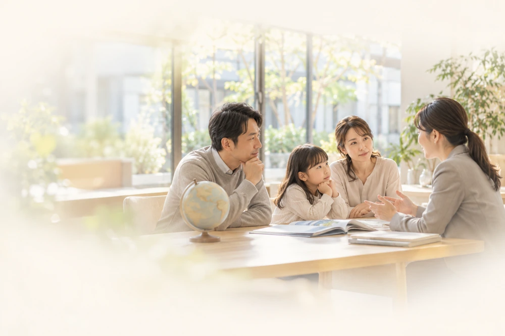
185
の国籍の子どもたちが学ぶ
ドバイの私立学校
17のカリキュラムから、家族に合う学びを。
KHDA・2024–25年度、ドバイの私立学校全体「海外に行く」だけではなく、
家族で、納得して選ぶ。
授業の言語、学費と生活、通学、帰国後の進路。将来的に専門家や海外子育て経験者との対話を通じ、比較するための情報を届けていきたいと考えています。
UAE × JAPAN / 今後の展望
世界の変化を、
自分の可能性へ。
ドバイで進むこと。日本で試みること。
二つの現場を知ると、
次に考えるべきことが見えてきます。
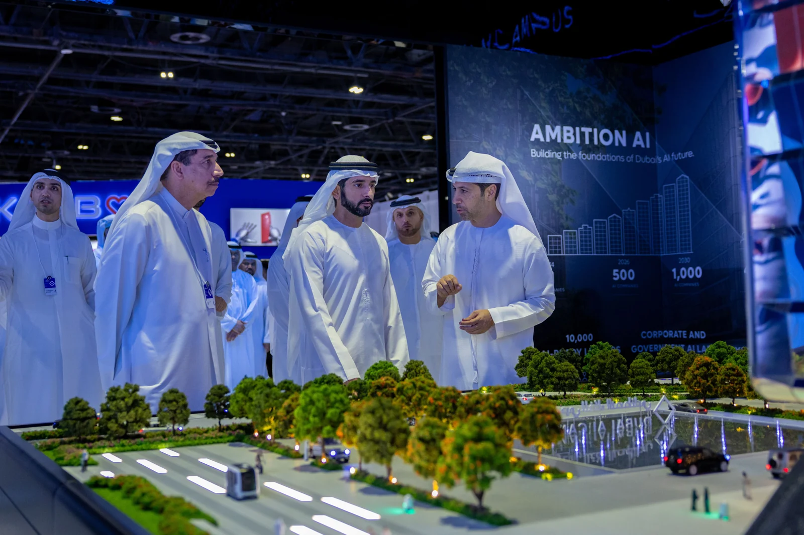
DUBAI AI CAMPUS
500社超
AIが集まり、実装が進む。ARTIFICIAL INTELLIGENCE
技術の先に、どんな仕事が生まれるか。
BRING THE CONVERSATION TO GINZA
銀座で、一緒に考えたいこと。
AI導入の実務家と、費用・データ管理・業務改善を学ぶ。
- 導入の費用
- データ管理
- 業務の改善
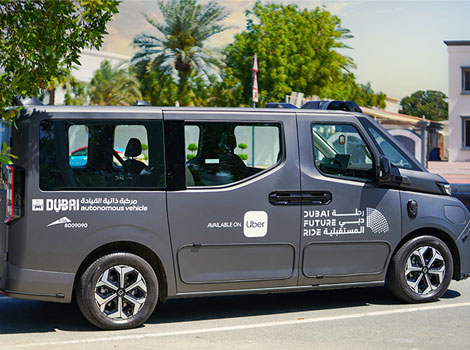
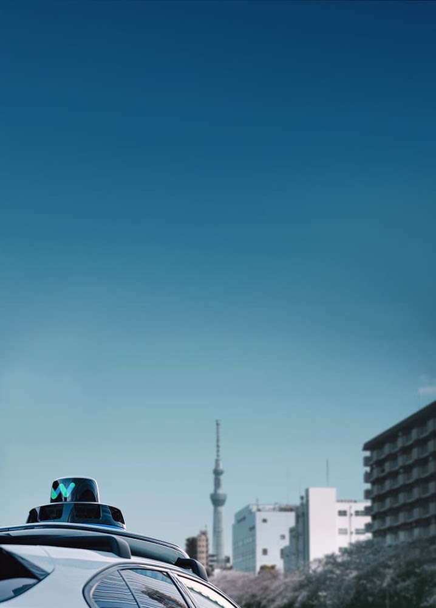
THE FUTURE OF MOVEMENT
移動が変わると、暮らしはどう変わるか。
BRING THE CONVERSATION TO GINZA
銀座で、一緒に考えたいこと。
専門家と、安全性・地域の移動・導入条件を学ぶ。
- 安全性
- 地域の移動
- 導入の条件
A FUTURE WE CAN BUILD TOGETHER
世界で得た価値を、
次の世代へ。
- 01
知る
世界への入り口をつくる
- 02
体験する
世界に触れ、一歩を踏み出す
- 03
成長する
知識・経験・人脈を育む
- 04
還元する
日本の仕事や地域に生かす
- 05
つなぐ
次世代の可能性を広げる
不動産で築いた接点を、将来は子どもや若者、企業へも。
世界と日本をつなぐ、長期的な循環を目指します。
TERUO SHIMADA
CEO / 嶋田 輝雄
MESSAGE
世界に踏み出す勇気を、
次の誰かへ。
私自身、ドバイに来て、人生の選択肢が大きく広がりました。言葉も習慣も違う場所で仕事をするなかで、出会った方々に支えられ、日本で培った誠実さや細やかな仕事の価値にも、あらためて気づきました。
その経験を、自分だけのものにしたくない。そんな思いで、日本人の仲間と現地のプロフェッショナルが集まり、2023年にEXCEEDを設立しました。一人ひとりが自分の強みを生かし、海外でも挑戦できる会社でありたいと考えています。
ドバイから始まったご縁は、ロンボク島の開発に関わる取り組みや、米国の不動産関係者との協業へと広がりました。それは私一人の成果ではなく、お客様や仲間、現地の皆様に育てていただいたつながりです。
私たちが大切にしたいのは、不動産をお届けした先の暮らしや仕事です。銀座を通じて、より多くの方が世界を知り、納得して一歩を選べるように。お客様と共に成長し、その経験を日本へ返していきたいと思っています。
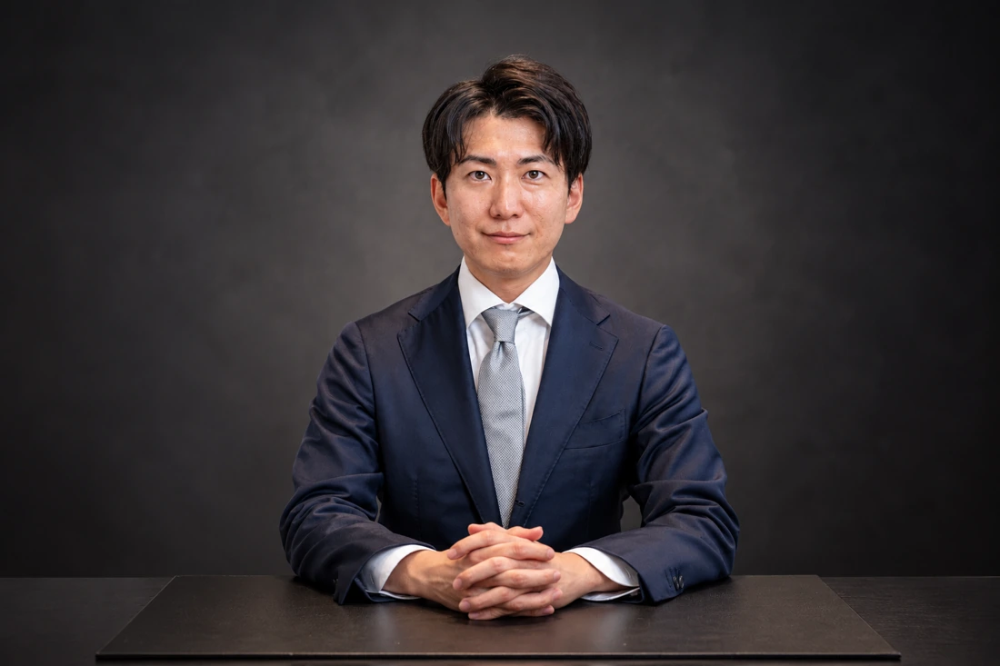
HOSOYAMA SHOYA
日本代表 / 細山 翔矢
MESSAGE
海外で得た経験を、
日本の次の一歩に。
ドバイでの経験を通じて、私自身も、世界との距離が変わりました。国籍や背景の異なる方々と話し、働くなかで、日本の仕事や技術には、海外で生きる力があると感じています。同時に、最初の相談相手がいることの大切さも知りました。
次は、その経験を日本で役立てたい。銀座の拠点を、海外に関心はあっても、何から始めればよいか分からない方が、気軽に話せる場所にしていきたいと考えています。
まずは、既に取り組んでいる海外不動産と暮らしの相談を、銀座でも身近に。その先の展望として、中小企業の海外進出や、子どもたちの国際教育につながる機会も育てたいと考えています。UAEと日本をつなぐ対談・交流や学びの発信は、将来の構想として段階的に検討していきます。
海外へ出ることだけが、答えではありません。世界を知ったうえで、自分や会社、ご家族に合う道を選べること。そして、そこで得た知識やご縁が、日本の仕事や地域にも生きていくこと。その小さな循環を、銀座から皆様と育てていきたいと思っています。
OUR TEAM
スタッフ紹介
ドバイ在住の日本人スタッフと現地のプロがお客様をサポートします
CEO
嶋田輝雄
Teruo Shimada
日本代表 / COO
細山翔矢
Shoya Hosoyama
Vice President
Bu Essah Malik
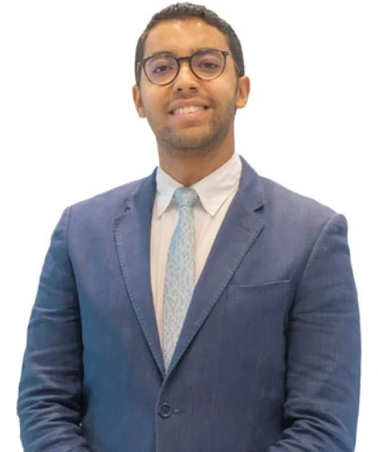
Sales Director
Mouad Benrabah
Sales Director
Katia Doneva
Sales Director
嘉村千晶
Chiaki Kamura
OUR PARTNERS
ドバイの有力デベロッパーと連携
EMAAR、Sobhaをはじめとする現地の大手デベロッパーと連携
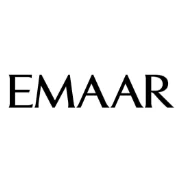
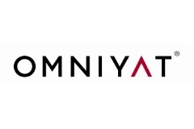
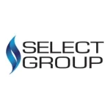
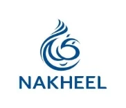
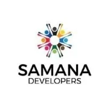
物件選びを支える、豊富な選択肢 2,000件以上 豊富な物件の中から お客様に合う一件を厳選
まずはドバイ不動産を知るところから
YOUR FIRST STEP
まずは、銀座で
お話ししませんか。
不動産を検討している方も、
UAEの可能性を知りたい方も。
既存のお問い合わせフォームへ移動します。
「銀座来場希望」とご記入ください。来場日時はスタッフとの確認後に確定します。
EXCEED GINZA / TOKYO
東京・銀座五丁目
- ショールーム開設
- オープニングセレモニー
- 来場・アクセス
- 詳細なアクセス・受付時間・来場方法はお問い合わせください。
セレモニーの参加方法・プログラムは、決まり次第ご案内します。
報道・法人・団体のお問い合わせFAQ
よくあるご質問
Qドバイの不動産は、日本法人/日本人でも所有権を持てますか？
A
日本人個人：
可能です。ドバイでは、外国人が不動産の所有権を持つことが認められています。
日本法人：
ドバイに支店を設置し、ドバイ経済省(DED)に登録をすることで可能です。
ただし、一般的に現地法人を設立するほうが、節税メリットが高いため、
現地法人の設立をおすすめしています。
Qドバイの不動産の購入には、英語は必要ですか？
A
いいえ、必要ありません。弊社の日本人スタッフが、不動産の購入から売却まで、サポートいたします。
Q物件の完成前に、建設会社が倒産した場合、どうなりますか？
A
前提として、ドバイでは投資家保護の制度あり、リスクは非常に低くなっています。
具体的には、
・購入資金は建設会社ではなく、ドバイ土地局に登録されたエスクロー(第三者預託)への振り込みとなります。
・その後、物件の完成段階に応じて、第三者預信先から建設会社へ資金が振り込まれます
そのため、建設会社の倒産のようなケースでも、お客様の購入資金は、基本的に保護されます。
Qドバイの現地物件で問題が起きた場合、どうなりますか？
A
弊社(EXCEED)の日本人スタッフが、現地におりますので、お客様に代わって、弊社で対応いたします。
Q現地（ドバイ）で、銀行融資は受けれますか？
A
ドバイの銀行にてローンを組むことが可能です。融資額は物件価格の50-70%が借入可能な金額となります(収入などの状況により変動)。
口座開設の仕方、ローンの借り入れプランについて、詳しくは個別面談で補足いたします。
詳しくは、下部のフォームから、お気軽に問い合わせいただければと思います。
Qドバイで不動産投資以外のビジネスを検討。サポートプランはありますか？
A
もちろん可能です。ドバイ在住の弊社の経営陣、日本人スタッフにて、お客様のビジネスを徹底的にサポートします。
弊社には、外国人スタッフもおりますので、英語/中国語など、その他の言語でもサポートも可能です。
過去の相談例： アパレル事業、飲食事業、金融事業などでのドバイ進出のご相談